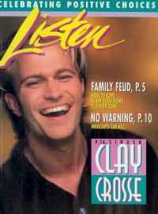

CMnexus
: Contemporary Christian culture, music, and media.
|
Clay CrosseOn the cover
September 1996
Listen | Media coverage- Apr 1994 in CCM "Faces to Watch: Clay Crosse", by Sissy Goff
- May 1995 in CCM "Right Place, Right Time", by Todd Chatman
- Sep 1996 in Listen "Clay Crosse", by Céleste Perrino-Walker
- Aug 1997 in CCM "Feat of Clay", by Melissa Riddle
- Oct 1997 in Living With Teenagers "True Love Waits: Stained Glass Tour Promotes Purity", by Mike Parker
- Jan 1998 in CCM "In Concert: Mechanicsville Christian Center, Richmond, VA", by Melissa Ruggieri
- Nov 1999 in Living With Teenagers "One Minute Interview: Clay Crosse", by Mike Nappa
- May 2000 in CCM "Brave New World", by Melissa Riddle
- Jun 2000 in Profile "A New Man", by Dan MacIntosh
- Jan 2001 in Living With Teenagers "Hope In Recovery: Clay Crosse Is A Different Man", by Todd Starnes
- Mar 2011 in CCM Digital "What's New: Clay Crosse", by Andy Argyrakis
- Jun 2012 in CCM Digital "Tour Spotlight: Sandi Patty & Friends Tour, BJCC Concert Hall, Birmingham, AL", by Andrew Greer
Albums & reviews:1993: My Place Is With You 1999: I Surrender All: The Clay Crosse Collection, Vol. 1 Award Summary (Nominations / Wins)
Dove Awards1996 Dove Awards2000 Dove Awards Billboard Music Video AwardsPublished articles4 articles credited in CCM Digital: 2011.Books about Clay Crosse |
|